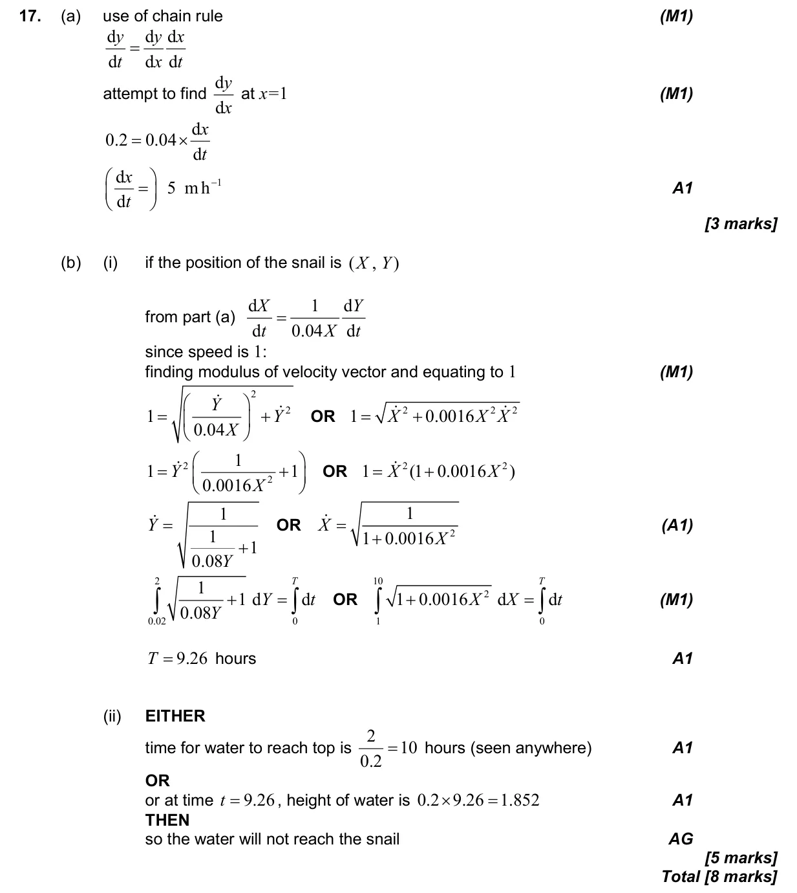

8 marks P1 TZ2 Calculator 3.12 Vector kinematics5.14 Setting up differential equations and separating variables5.9 Further differentiation: standard derivatives, chain, product and quotient rules, related rates5.3 Differentiating polynomials, n in Z Question Hide breakdown ab Markscheme 